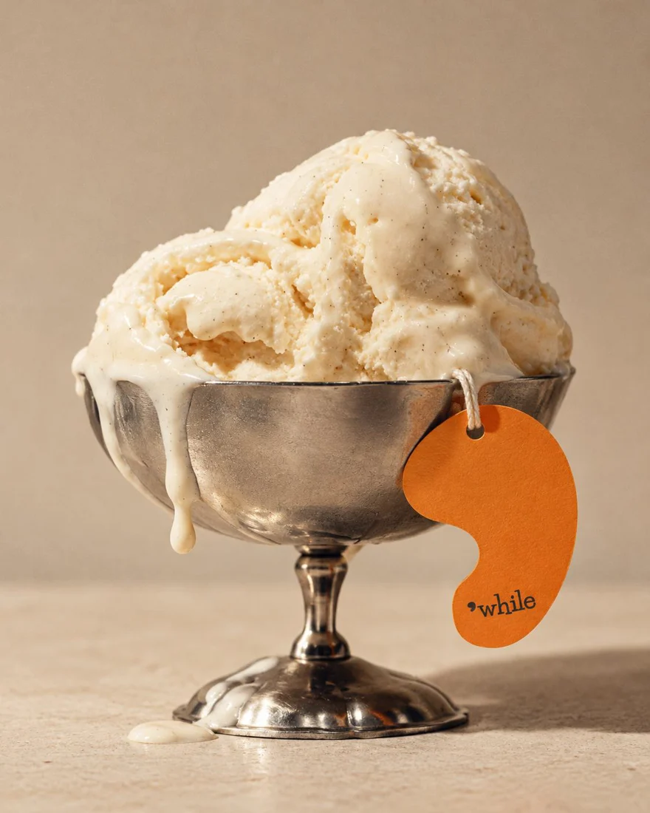

Icons
Use simple arrows, progress and controls where they clarify interaction. Provide labels. Do not create new brand symbols.
A consistent direction for photography, illustration, and generated scenes.
Small servings. Intimate tables. Natural gestures. Terracotta, ceramics, glass and soft textiles, seen in warm light with gentle shadows.
Avoid oversized portions, exaggerated melting, excessive greenery, ornate Italian clichés and generic luxury imagery.

Use simple arrows, progress and controls where they clarify interaction. Provide labels. Do not create new brand symbols.
Photography leads. Use simple grid-aligned diagrams only to explain relationships or construction. Avoid mascots and unrelated decorative imagery.
Generate scenes from approved references. Apply authentic logos and type afterward. Review proportions, hands, glassware, materials and text.